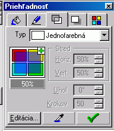

| Vıplòou mono vyfarbi plošné objekty alebo plochy ohranièené uzavretou èiarou (hadom).
Vıplò môe by jednofarebná alebo viacfarebná s farebnımi prechodmi. Cez edit mome pridáva ïalšie
farby meni smer zmeny farieb resp. stred zobrazovania farieb.
Vıplne mono robi aj bitmapamy alebo fraktálmi Tvary vıplne
|

| Štıly èiar mono zvoli cez galériu v èasti pero. Zmeny sa prejavia na aktuálnom objekte.
|
|  | Priesvitnos mono nastavi pre celı objekt rovnako (v percentách) alebo mono
priesvitnos objektu meni podobne ako sa nastavuje vzh¾ad vıplne.
|

| Viaceré objekty mono spolu skombinova
|